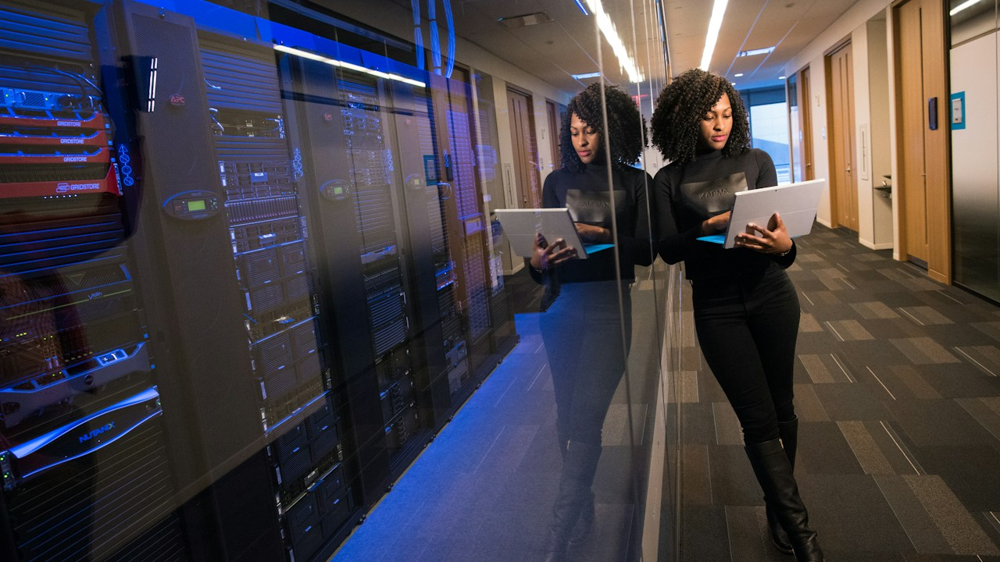

Pakistan's Green Industrial Leap: NEPRA's Solar Wheeling Framework Unlocks Export Potential
NEPRA has greenlit a pivotal framework for industrial solar bilateral wheeling, enabling export-oriented businesses to directly procure and transmit captive green energy. This landmark decision promises to dramatically reduce operational costs and enhance global competitiveness for vital Pakistani sectors.

In a nation grappling with persistent energy crises and soaring electricity tariffs, the National Electric Power Regulatory Authority (NEPRA) has delivered a significant policy breakthrough. Their recent approval of a comprehensive framework for industrial solar bilateral wheeling is not just a regulatory update; it's a strategic pivot. For years, Pakistani industries, from the bustling textile mills of Faisalabad to the burgeoning IT parks in Islamabad's STZA, have faced unpredictable power outages and skyrocketing bills often exceeding PKR 35-45 per kilowatt-hour, crippling competitiveness. This framework offers a tangible path to self-sufficiency and cost predictability, a much-needed lifeline.
The implications for Pakistan's beleaguered export industries are profound. Businesses, previously constrained by grid limitations and the exorbitant cost of self-generation via fossil fuels, can now transmit surplus power from their captive solar plants located elsewhere, even across provincial lines. Imagine a textile unit in Lahore leveraging a solar farm in interior Sindh, or a technology incubator on I.I. Chundrigar Road powering its operations from a remote photovoltaic facility. This means a stable, predictable energy supply at a significantly lower cost, potentially bringing the effective per-unit price down to an estimated PKR 18.50/KWH, fostering an environment ripe for growth and global market penetration.
At its core, the wheeling framework allows ‘Bulk Power Consumers’ (BPCs) – primarily industrial entities – to enter into bilateral agreements directly with 'Generation Companies' (GenCos), typically solar park developers. The National Transmission and Despatch Company (NTDC) and various Distribution Companies (DISCOs) like LESCO, K-Electric, or FESCO will act as the carriers, for which they will charge a specified wheeling fee. This regulatory mechanism effectively unlocks existing transmission infrastructure, transforming it from a bottleneck into a conduit for green energy, bypassing the traditional complexities of grid integration and allowing for efficient energy flow.
This initiative aligns Pakistan with global green energy trends, bolstering its credentials as a sustainable manufacturing and tech hub. It's more than just cost-cutting; it's about energy independence and attracting foreign direct investment into an energy-secure future. Local solar installers, financing institutions—potentially encouraged by SBP's green energy refinance schemes—and the broader clean tech ecosystem stand to gain immensely. This policy lays the groundwork for a decentralized, resilient energy landscape, moving away from reliance on imported fossil fuels and towards indigenous, clean power generation.
The Mechanics of Industrial Solar Wheeling & Tariff Breakdown
NEPRA's newly approved framework meticulously outlines the process for bilateral power procurement through wheeling. It specifies that industrial consumers can sign Power Purchase Agreements (PPAs) with dedicated solar generation facilities. The process involves comprehensive coordination between the GenCo, the BPC, and the relevant transmission (NTDC) and distribution companies (DISCOs) to ensure seamless energy flow. The tariffs, crucial for the viability of this model, include charges for transmission (by NTDC), distribution (by the respective DISCO), and service charges for the administrative and operational efforts involved.
These wheeling charges are designed to compensate the grid operators for the use of their infrastructure without making the green energy prohibitive. While the base generation cost from captive solar is significantly lower than thermal alternatives, the added wheeling charges determine the final effective rate. The framework introduces transparency and predictability, allowing businesses to accurately forecast their energy expenses and compare them against volatile traditional grid tariffs. This clarity is essential for long-term investment planning, especially for facilities with substantial energy demands like those in the textile and cement sectors.
| Component | Typical Grid Tariff (PKR/kWh) | Wheeled Solar Tariff (PKR/kWh) |
|---|---|---|
| Generation Cost | 25.00 - 30.00 | 10.00 - 12.00 (Captive Solar) |
| Transmission Charges (NTDC) | 1.50 - 2.00 | 0.75 - 0.85 (Wheeling Charge) |
| Distribution Charges (DISCOs) | 3.00 - 5.00 | 1.50 - 2.50 (Wheeling Charge) |
| Fuel Price Adjustments (FPA) | Variable (High) | N/A (Fixed PPA) |
| Surcharges & Taxes | 5.00 - 8.00 | Applicable (Lower Base) |
| Estimated Total (Avg.) | 38.00 - 45.00 | 15.00 - 20.00 |
Boosting Export Competitiveness: A Strategic Imperative
For Pakistan's critical export sectors, particularly textiles, leather, and IT, energy is often the largest operational expense. High and unpredictable energy costs have consistently eroded margins, making Pakistani products less competitive in international markets. The ability to procure stable, affordable green energy through wheeling provides a formidable advantage. Textile mills in Punjab, for instance, can now offer 'green' products with a reduced carbon footprint, appealing to environmentally conscious global buyers and meeting increasingly stringent sustainability standards in markets like the EU and USA. This also offers a hedge against future carbon taxes.
Furthermore, the framework offers energy security that is vital for consistent production cycles, reducing reliance on costly backups or suffering losses due to load shedding. This predictability aids in meeting export deadlines and maintaining customer confidence. While the initial capital expenditure for setting up large-scale solar plants might seem substantial, SBP's various green energy financing schemes, alongside local banks like Habib Bank and MCB, are increasingly offering favorable credit lines. This policy can also attract foreign investment into setting up dedicated solar farms targeting Pakistan's industrial zones, further boosting the clean energy ecosystem.
Grid Integration, Challenges, and Pakistan's Energy Future
While the solar wheeling framework is a monumental step, its effective implementation hinges on addressing several grid integration challenges. The intermittent nature of solar power necessitates robust grid management systems, accurate forecasting tools, and potentially, battery energy storage solutions at key points. NTDC and the DISCOs will need to upgrade their infrastructure to accommodate more distributed generation and manage fluctuations seamlessly. Investment in smart grid technologies, which can monitor and manage energy flow in real-time, becomes paramount to ensure stability and reliability across the national grid, especially as more industries opt for wheeled power.
Looking ahead, this framework could catalyze a broader transformation of Pakistan's energy landscape. It promotes decentralization, reduces the burden on centralized power generation, and fosters a more resilient energy mix. It also opens avenues for skill development and job creation in renewable energy project development, operations, and maintenance, benefiting local economies. The success of industrial solar wheeling could pave the way for similar frameworks for commercial sectors, turning Lahore's Hafeez Center or Karachi's Saddar into hubs for distributed green energy, truly propelling Pakistan towards a self-reliant and sustainable energy future.
Executive Takeaways & Key Insights
- **Optimize Energy Costs:** Industrial units should immediately explore captive solar generation combined with wheeling to significantly reduce operational energy expenses and gain cost predictability.
- **Boost Export Competitiveness:** Leverage stable, green energy to enhance product competitiveness, meet international sustainability standards, and attract environmentally conscious buyers.
- **Strategic Investment Planning:** Engage with energy consultants and financial institutions to assess feasibility, secure green financing, and strategically plan for long-term energy independence.
- **Advocate for Grid Modernization:** Industries benefiting from wheeling should advocate for and potentially invest in smart grid solutions to ensure stable and reliable integration of renewable energy.
Frequently Asked Questions
Which industries are eligible for NEPRA's industrial solar wheeling framework?
The framework primarily targets 'Bulk Power Consumers' (BPCs), which includes large industrial units and industrial/technology parks like those in the STZA zones. Export-oriented sectors such as textiles, leather, cement, and IT are key beneficiaries, enabling them to reduce costs and enhance their green credentials for global markets.
What are the primary costs involved in setting up and utilizing industrial solar wheeling?
Costs include the capital expenditure for establishing a captive solar power plant, the Power Purchase Agreement (PPA) with a Generation Company (GenCo), and NEPRA-approved wheeling charges. These charges cover transmission by NTDC and distribution by DISCOs, plus administrative service fees, which collectively determine the effective per-unit cost.
How does this framework address the issue of grid stability with intermittent solar power?
The framework acknowledges the need for grid stability. While individual plants provide intermittent power, collective integration and smart grid technologies are crucial. Future developments will likely involve investments in battery energy storage systems, advanced forecasting, and grid modernization by NTDC and DISCOs to manage fluctuations and ensure reliable supply for all users.